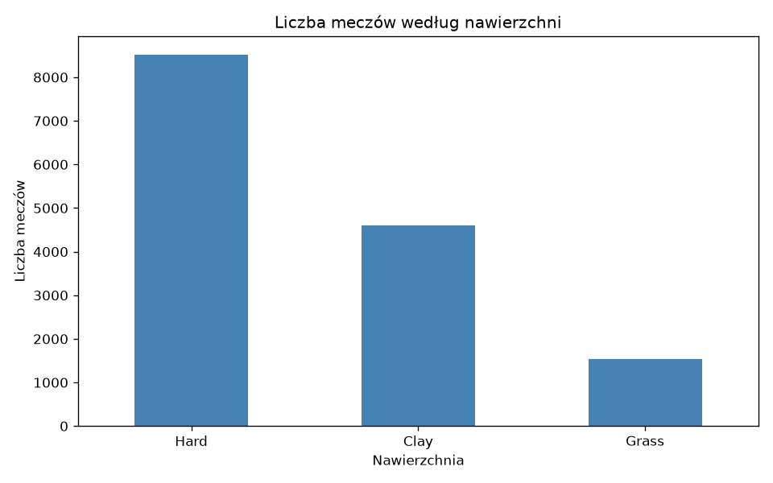
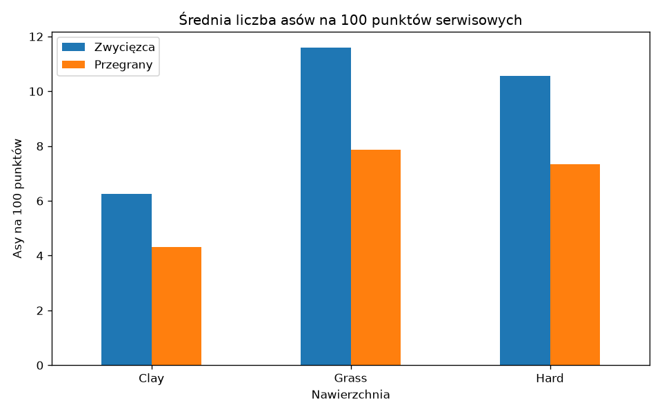
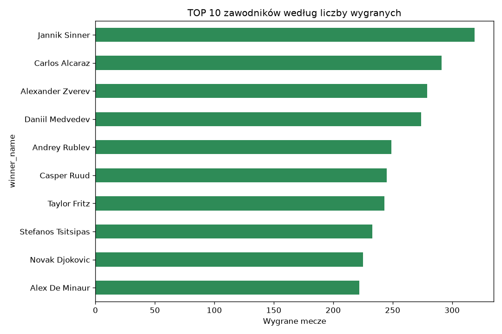
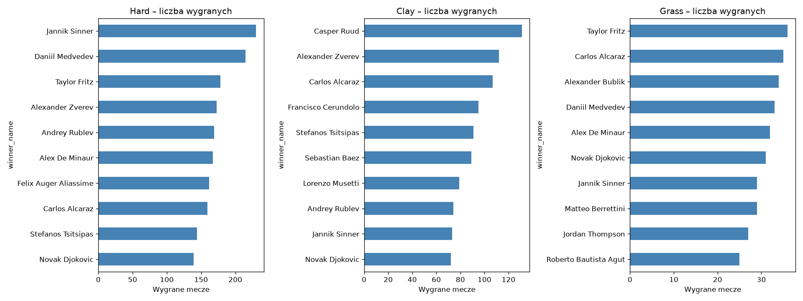
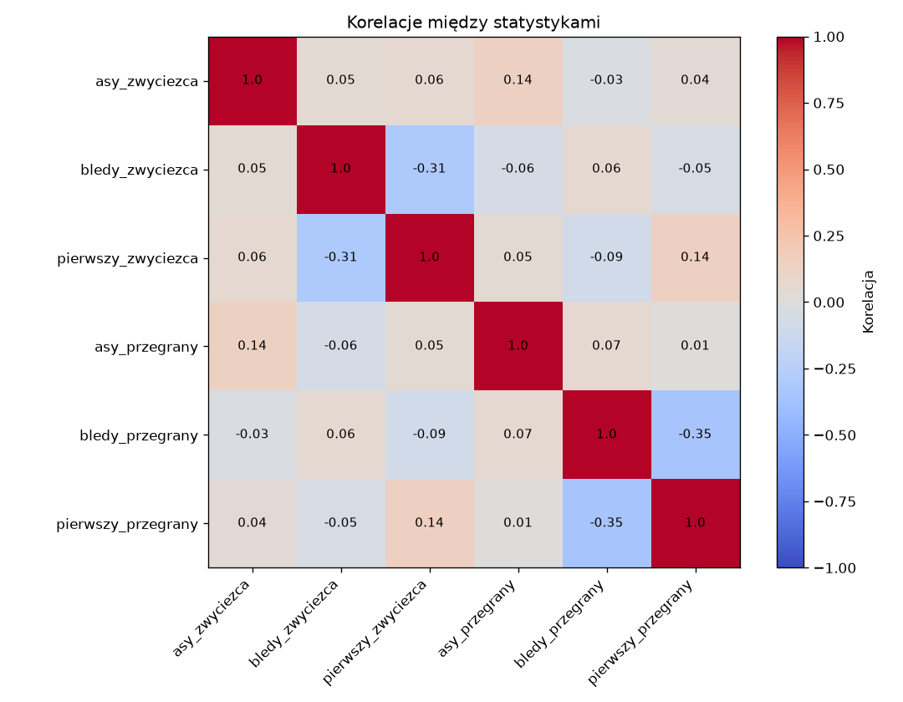
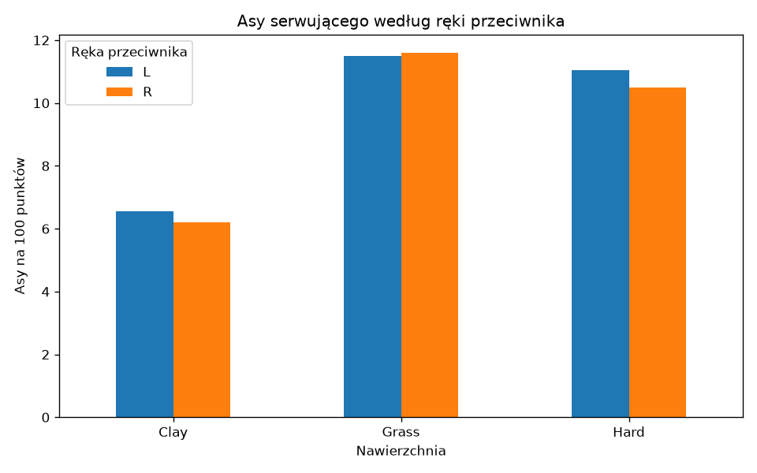
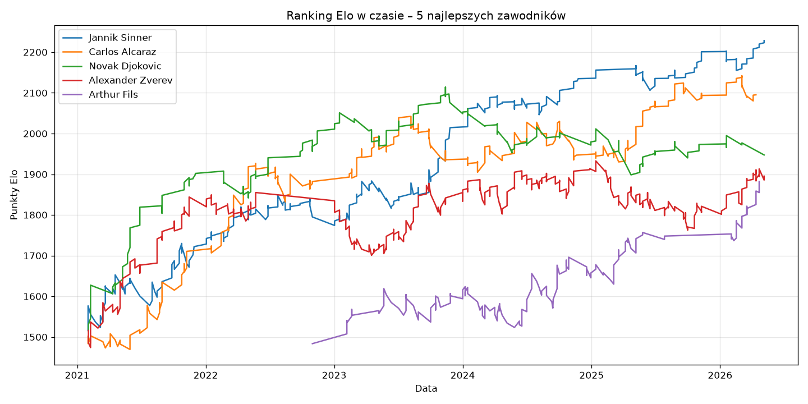

Projekt zaliczeniowy · Systemy Sztucznej Inteligencji
Rozkład meczów w zbiorze danych.

Średnia liczba asów na 100 punktów serwisowych.

Ranking wg liczby wygranych meczów.

Osobny ranking dla kortu twardego, mączki i trawy.

Wartości od -1 do 1. Bliżej zera oznacza brak związku.

Czy przeciwko leworęcznym pada więcej asów?

Forma pięciu najlepszych zawodników. Elo reaguje na każdy mecz.

Regresja logistyczna, test na najnowszych meczach.
Liczby przepisz z pliku wyniki_modelu.txt.